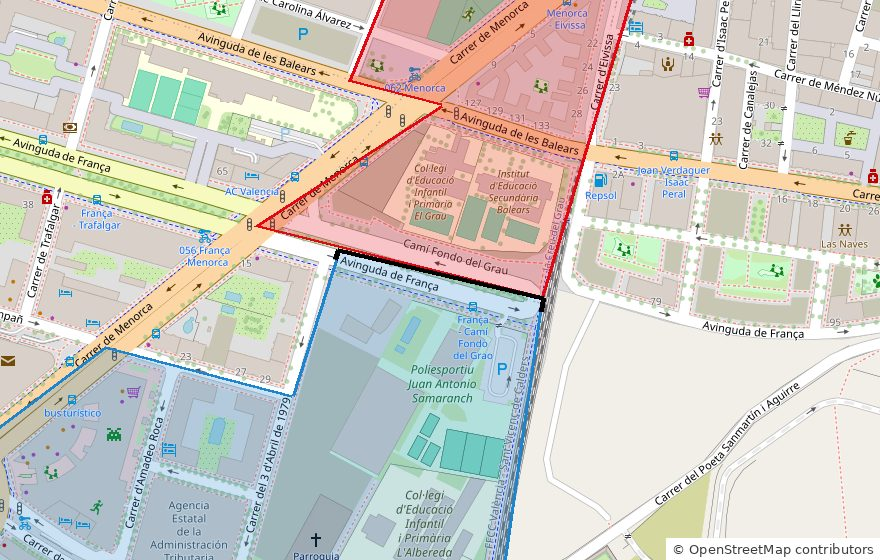
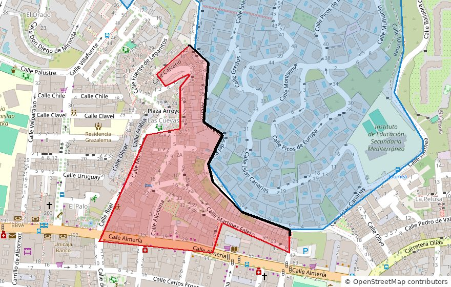
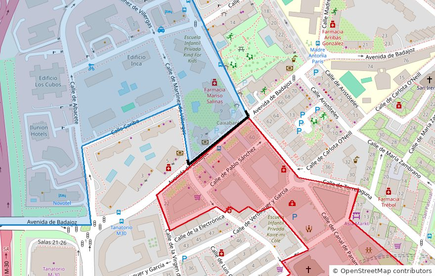
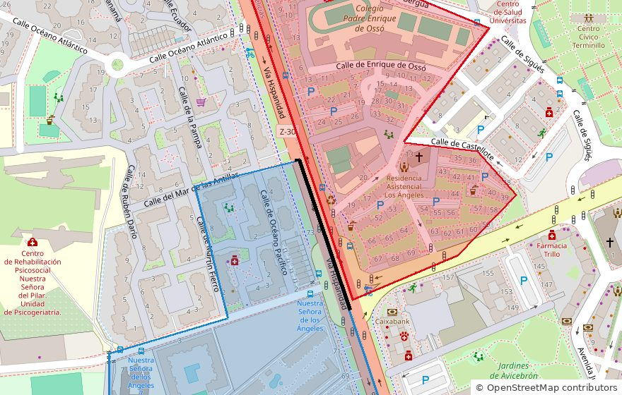
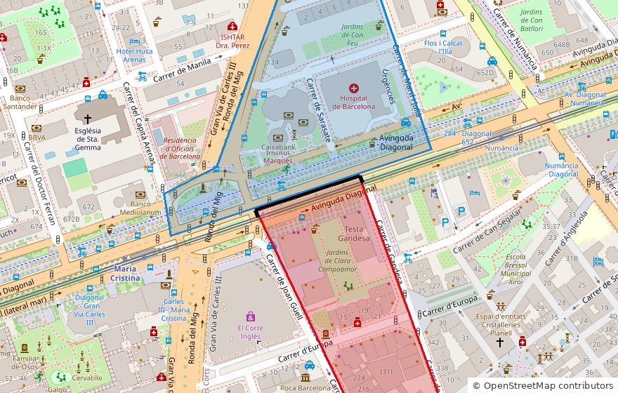
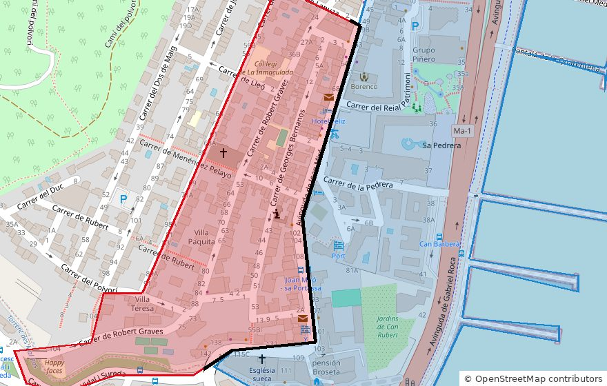

Actualidad · Vecinos que votan distinto · España
La calle que parte el voto: el PP sacó el 55,9% a un lado de la avenida de Francia, en València, y el 16,4% al otro
En nueve grandes ciudades, una de cada cinco parejas de secciones censales vecinas eligió un ganador distinto en 2023. Seis calles donde se ve, de El Palo a la Diagonal, y un patrón: en casi todos los grandes saltos, el lado donde PP y Vox suman más es también el de más renta.
Por Nacho G. del Álamo ·

En la avenida de Francia de València, la sección censal que queda al norte, en El Grau, votó al PSOE en las generales de 2023: 43,6%, frente al 16,4% del PP. La sección de enfrente, al sur, en Penya-roja, votó al PP: 55,9%, frente al 16,9% del PSOE. Las separa la avenida.
No es un caso raro. Hemos comparado cada sección censal con sus vecinas en nueve grandes ciudades: Madrid, Barcelona, València, Sevilla, Zaragoza, Málaga, Murcia, Palma y Bilbao. Son 16.154 parejas de secciones que comparten al menos 80 metros de límite. En una de cada cinco (el 19,5%), cada lado eligió un ganador distinto. En 488, la diferencia en el voto a algún partido fue de 20 puntos o más.
Esos saltos se pueden ver en el mapa electoral calle a calle: basta con buscar una dirección y mirar las secciones de alrededor. Aquí hay seis, una por ciudad, en las que lo que separa a las dos secciones es una calle, comprobado sobre el callejero de OpenStreetMap.
Ver la tabla por sección
València: la avenida de Francia

La sección de El Grau (12-032) tiene una renta media de 17.922 euros por unidad de consumo y votó el 72,6% de su censo. La de Penya-roja (12-048), 36.340 euros y el 80,7%. Vox sacó casi lo mismo a los dos lados (16,9% y 18,0%); la diferencia está en el PP y el PSOE.
Penya-roja es uno de los barrios que más han crecido en València. Valencia Plaza lo describía en 2021 como una zona que pasó «de los 2.500 habitantes de 2001 a los más de 13.000 actuales», con «el alquiler mediano más costoso de València, aunque justo en el distrito colindante, Poblats Marítims, los precios se desploman». Y resumía: «En ocasiones basta con caminar unas calles para toparse con un contraste de casi 500 euros».
Málaga: la avenida de Miraflores del Palo

En la sección de Miraflores del Palo (02-022), la urbanización que sube por la ladera, el PP sacó el 68,2% y el PSOE, el 9,5%. Al otro lado de la avenida, en Las Cuevas, en El Palo (02-023), ganó el PSOE con el 38,1%, y el PP se quedó en el 33,5%. La renta va de 39.909 a 18.151 euros.
Esa frontera tuvo un muro. «Tras años de lucha vecinal, el 30 de abril de 1983 al fin lograron tirar abajo el muro que separaba la popular barriada de El Palo: a un lado, la humilde zona de Las Cuevas; al otro, la pujante urbanización de Miraflores de El Palo», contaba El Español de Málaga en 2022. Antonio Triguero, representante vecinal de Las Cuevas, lo recordaba así: «Nos cortaban la vía para que no fuésemos a la urbanización y, a cambio, nos ponían el agua».
La asociación de vecinos de El Palo describe hoy un barrio «con zonas muy populares: Las Cuevas, La Pelusa, Protegidas, Playas,… y otras de alto nivel económico», con «grandes contrastes sociales y urbanísticos» (AA. VV. El Palo).
Madrid: la avenida de Badajoz

En Ciudad Lineal, la avenida de Badajoz separa dos secciones vecinas. Al norte (15-147), en torno a la calle de Albacete, el PP sacó el 64,7%, con una renta de 43.998 euros y una participación del 84,2%. Al sur (15-135), en torno a la calle de Pablo Sánchez, ganó el PSOE con el 36,5%; el PP sacó el 31,6%, con 25.635 euros de renta y el 74,5% de participación.
Un estudio con las 2.400 secciones de Madrid de Álvaro Sánchez García y Hugo Marcos Marné, publicado en Electoral Studies este año, encontró que la subida del alquiler se asocia con el voto de cada sección. «La vivienda es un fenómeno con ganadores y perdedores», explicaba Sánchez García en elDiario.es. «Aquí no aplica mucho eso del obrero de derechas».
Zaragoza: la Vía Hispanidad

La Vía Hispanidad, el tercer cinturón de Zaragoza (Z-30), es aquí el límite entre dos distritos. Del lado de Delicias (03-048) votó el 57,0% del censo y ganó el PSOE, con el 39,1%. Del lado de Oliver-Valdefierro (08-010) votó el 80,9% y el PP sacó el 54,9%. Es la mayor diferencia de participación de los seis casos: casi 24 puntos. La renta pasa de 15.571 a 37.125 euros.
En 2019, elDiario.es describía una «frontera invisible» parecida, entre Casablanca y Delicias: «Aunque no tienen una frontera física, sí existe una simbólica que los separa: los hogares de Casablanca ingresan 30.000 euros más y se abstienen casi la mitad que sus vecinos de Delicias».
Barcelona: la Diagonal

En Les Corts, la sección al norte de la Diagonal (04-024) votó al PP: 44,3%, con Junts en el 17,2% y el PSC en el 18,7%. La de enfrente, al sur (04-028), votó al PSC: 27,6%, con Junts en el 18,5% y el PP en el 19,3%. Renta: 55.673 euros al norte, 32.929 al sur.
Barcelona es, de las nueve ciudades, donde menos parejas de secciones vecinas tienen ganadores distintos: el 8,0%, porque el PSC ganó en casi toda la ciudad. Pero la Diagonal es una frontera conocida. «En el caso de Barcelona la Diagonal divide la ciudad entre ricos y pobres, dejando al norte a barrios boyantes como Muntaner, Vallvidrera, Sant Gervasi y Pedralbes», escribía Público en 2019.
Palma: la avenida de Joan Miró

En El Terreno, la avenida de Joan Miró parte el barrio en dos. Hacia el paseo Marítimo (02-008), el PP sacó el 50,4%. Hacia la montaña (02-009), ganó el PSOE con el 38,0%, y el PP bajó al 26,2%. En las dos votó poco más de la mitad del censo (61,2% y 55,9%).
Palma es la ciudad con más parejas de secciones vecinas con ganadores distintos: el 32,9%. En 2019, Ultima Hora describía El Terreno como un barrio que «en el pasado vivió épocas doradas y que desde hace muchos años acumula degradación, inseguridad y problemas de convivencia», al que empezaban a llegar promociones de lujo.
Un patrón que se repite
Ver la tabla por ciudad
En los seis casos, la sección donde ganó el PP es también la de más renta. No es casualidad de la selección: de las 487 parejas de secciones vecinas con un salto de 20 puntos o más (y con datos de renta en las dos), en 485 la sección donde PP y Vox sumaban más era también la de más renta, y en 454 (el 93%) era también la que más votó.
Es una relación conocida. «Los pobres participan menos que los ricos. La abstención extrema se concentra en los suburbios de las ciudades», escribían Manuel Trujillo (IESA-CSIC) y Braulio Gómez Fortes (Universidad de Deusto) en el VIII Informe FOESSA. Pusieron un ejemplo en Bilbao: en Otxorkoaga «existen mesas electorales donde no votan dos de cada tres de sus habitantes», mientras que en Abando, «el metro cuadrado más caro de la ciudad», votan dos de cada tres.
El politólogo Toni Rodon (Universitat Pompeu Fabra), que ha estudiado la segregación residencial, lo explicaba en elDiario.es: «[...] los pobres están cada vez más juntos y los ricos viven cada vez más entre ricos. Los dos polos se van separando». Y sobre Barcelona: «Los ricos votan primero al PP y luego a Vox, y por abajo el primer partido es el PSC y luego Vox».
Los saltos más grandes no siempre están en una calle. En Sevilla, el mayor (52 puntos en el voto al PSOE) separa dos secciones a ambos lados de las vías del tren; otros están junto a rondas, parques o grandes recintos. Para esta pieza hemos elegido casos en los que, sobre el plano, la frontera es una calle con viviendas a los dos lados.
Son datos de secciones, no de personas. Dicen cómo votó cada lado de la calle en conjunto, no quién votó qué, y no explican por qué. La renta y el voto van juntos en casi todas estas parejas, pero eso no quiere decir que la renta sea la única causa.
Busca tu calle en el mapa electoral calle a calle · Más: Cómo votó tu calle · Pobreza y participación por barrios · Sant Cugat y Badia: 5,4 kilómetros, 23 puntos
Método y fuentes
- Qué se compara
- Las 16.154 parejas de secciones censales contiguas (al menos 80 metros de límite común y 400 electores cada una) de Madrid, Barcelona, València, Sevilla, Zaragoza, Málaga, Murcia, Palma y Bilbao en las generales de 2023, y su renta por unidad de consumo de 2023.
- Límites
- Son datos de secciones, no de personas, y no explican por qué cada lado vota distinto. Los seis casos se han elegido entre los saltos más grandes de cada ciudad en los que el límite es una calle con viviendas a los dos lados; no son una muestra al azar. La renta de las secciones más ricas está topada en 58.752 euros. Los límites de sección están simplificados. Sin voto exterior.
- Cómo se calcula
- Porcentajes sobre votos a candidaturas, salvo la participación, que es sobre el censo. Cifras reproducibles con los scripts del expediente de la pieza. Metodología del Atlas
- Fuentes
- Ministerio del Interior, resultados electorales por mesa (Infoelectoral), vía pollspaindata. Sin voto exterior (CERA)
- INE, Atlas de Distribución de Renta de los Hogares (renta y edad por sección), vía ineAtlas.data
- OpenStreetMap, callejero para comprobar los límites
- CartoCiudad (IGN), geocodificador inverso
- Valencia Plaza, el alquiler en València calle a calle (25-12-2021)
- El Español de Málaga, el muro de El Palo (30-4-2022)
- Asociación de Vecinos de El Palo, El barrio (31-10-2021)
- elDiario.es, Álvaro Sánchez García sobre alquiler y voto en Madrid (9-2-2026)
- elDiario.es, por qué los barrios pobres no van a votar (7-4-2019)
- Público, la brecha entre ricos y pobres en las ciudades (3-2-2019)
- Ultima Hora, las inversiones de lujo llegan a El Terreno (8-9-2019)
- Manuel Trujillo y Braulio Gómez Fortes, La segregación electoral interurbana en España, VIII Informe FOESSA (2019)
- elDiario.es, entrevista a Toni Rodon (2-4-2023)
- Autoría
- Nacho G. del Álamo
- Revisión de datos y texto
- Nacho G. del Álamo, 15 de octubre de 2026
- Publicado · actualizado
- 15 de octubre de 2026 · 15 de octubre de 2026
- Correcciones
- Ninguna.
Serie «Camino al 29N»: 52 piezas
- Del 12% al 2,9% y de vuelta al 9,5%: el nacionalismo gallego que deja Beiras
- La Barcelona que tendría que reconquistar Colau: los comuns ganaban en 837 secciones y ahora en 23
- El 29N repite mes con mal recuerdo: el último noviembre dejó la participación más baja de la democracia
- Con Puigdemont de candidato, Junts duplica su voto: del 11% en el Congreso al 22% en el Parlament
- Sumados, ERC y los comuns habrían sido la lista más votada en 1.431 secciones de Cataluña en 2023; por separado, en 232
- Andalucía vota casi diez puntos más al PSOE cuando elige al Gobierno que cuando elige a la Junta
- La huelga del 11N apela a los barrios que menos votan: donde más paro hay, la participación cae al 61%
- En Madrid, el PSOE saca diez puntos más cuando se vota al Gobierno que cuando se vota al alcalde
- El espacio a la izquierda del PSOE fue el más votado en 9.810 secciones en 2015; en 2023, en 182
- Vox saca casi lo mismo donde uno de cada tres vecinos nació fuera que donde casi nadie lo hizo
- Tras el saludo gélido de Sánchez en el 12‑O: en Madrid, el PP de Almeida sacó más votos que el de Feijóo, con 85.000 votantes menos
- La aceituna de mesa, por debajo de coste: en sus dos grandes comarcas, el PP no ganó en ninguno de los 23 pueblos en 2023
- Qué provincias pueden decidir el 29N: en 17, el último escaño se resolvió en 2023 por menos de 5.000 votos
- Dónde puede costar más la división a la izquierda: en ocho provincias, Sumar ganó o perdió un escaño en 2023 por menos de 5.000 votos
- Vivienda, inmigración y economía: en el CIS de octubre la vivienda salta del 37,5% al 55,7% y ya es el problema más citado por los votantes de PP, PSOE y Sumar
- Abascal promete pagar las pensiones «como sea», pero Vox saca su peor resultado en los barrios más envejecidos: 9,8%, frente al 16,2% en los más jóvenes
- EAPN presenta su informe sobre pobreza y territorio: en los barrios más pobres se vota 15 puntos menos que en los más ricos, el doble de distancia que en 2004
- Once ministros en las listas del PSOE: con los votos de 2023, el puesto más ajustado es el de Ana Redondo en Valladolid, que caería si el PSOE perdiera el 17% de sus votos
- Ciudadanos se suma a Democracia 21 en Madrid y Barcelona: en los barrios madrileños donde Cs fue más fuerte en 2019, el PP pasó del 18,2% al 49,2% en 2023
- El CEO da a Aliança Catalana hasta 25 escaños: en el Parlament de 2024 sacó el 3,8%, pero el 24,9% en el Ripollès y el 7,8% en los pueblos de menos de 1.000 electores
- Cómo votó tu calle: una de cada cuatro secciones censales eligió en 2023 un ganador distinto al de su municipio
- Estás aquíLa calle que parte el voto: el PP sacó el 55,9% a un lado de la avenida de Francia, en València, y el 16,4% al otro
- Madrid llega al 29N teñida de azul: el PP ganó en 1.603 de sus 2.450 secciones y el PSOE solo resiste en cuatro distritos del sur
- Barcelona pasó del amarillo al rojo: ERC ganó en 563 secciones en 2019 y en ninguna en 2023
- València borró a Compromís del mapa: ganaba en 101 secciones en 2019 y en 15 en 2023
- Sevilla tiene dos mapas: el PP ganó en votos el 23J, pero el PSOE fue el primero en 286 de sus 521 secciones
- Zaragoza, empate barrio a barrio: el PSOE ganó en 250 secciones y el PP en 245, y 53 se decidieron por menos de dos puntos
- En Málaga, la renta decide quién vota: el 46,7% en los barrios más pobres y el 80,6% en los más ricos
- Murcia, de verde a azul: Vox ganó en 164 secciones en 2019 y en una en 2023
- Palma, la gran ciudad que menos vota: el 62,5% en 2023, y menos del 35% en algunas secciones del este
- Montse Mínguez dimite y deja la lista de Lleida: el PSC duplicó allí su voto en 2023 y le ganó el cuarto diputado al PP por unos 3.500 votos
- El Rey visita las dos ciudades que menos votan: en Melilla votó el 49,8% en 2023, y en una sección de la periferia, el 19%
- El Senado de 2023: 120 senadores para el PP con un tercio de los votos
- Un diputado cuesta 25.300 votos en Teruel y 97.500 en Madrid: el precio del escaño, provincia a provincia
- 1,9 millones de votos no eligieron a nadie en 2023: en Teruel, Lleida y Soria, uno de cada tres
- Feijóo y Sánchez chocan por las pensiones en un censo con 10,2 millones de electores de 65 años o más: superan a los de 18 a 34 en 49 de las 52 provincias
- El CIS de Tezanos da al PSOE 11,8 puntos de ventaja: en las tres generales desde 2019 sobrestimó su margen sobre el PP entre 1 y 6,9 puntos
- Rufián admite «He fracasado»: con los votos de 2023, ERC y Sumar juntos habrían sacado un solo diputado más en Cataluña, y por 126 votos
- Ocupación: en las provincias con más demandas ante los juzgados, Vox sacó el 15,9% en 2023, frente al 11,5% en las que menos
- Frente Amplio y Podemos solo irán juntos en cinco provincias: en las otras 47, Sumar sacó 26 de sus 31 diputados en 2023
- El Supremo deja sin voto a 163.020 nacionalizados por la ley de nietos: en 2023, el voto exterior ya le dio al PP un escaño del PSOE en Madrid
- PSOE y Frente Amplio, juntos al Senado: con los votos de 2023, su lista habría ganado al PP en 17 provincias donde este sacó tres senadores
- Albiol, cabeza de lista del PP por Barcelona: en Badalona sacó el 55,7% en las municipales de 2023 y dos meses después el PP se quedó en el 16,6%
- Dimite la lista del PSOE en Palencia tras imponer Ferraz a Martínez Seijo: en 2023 al partido le faltaron 7.097 votos para un segundo diputado
- Nueva Canarias, Podemos, IU y Sumar se unen en Canarias: con los votos de 2023, la suma habría pasado de uno a tres diputados
- Separados el 29N, como en 2015: con los votos de aquel año, una sola papeleta de Podemos e IU habría sacado 86 diputados, no 71
- Delgado contra Montero en Madrid: con los votos de 2023, Podemos necesitaría uno de cada cinco votos de Sumar para sacar escaño
- PP y Vox negocian el Senado: con los votos de 2023, sumar a Vox le devolvería a la derecha 19 provincias frente a la lista de PSOE y Frente Amplio
- A seis semanas del 29N: en 534 barrios de España no votó ni la mitad del censo, y tres de cada cuatro están entre los más pobres
- Con el PSOE andaluz en mínimos: Sevilla, Jerez y otros 170 municipios que votaron a la izquierda en todas las generales de 1977 a 2008 dieron en 2023 más votos a PP y Vox
- A cinco semanas del 29N: en la calle de los Hermanos García Noblejas, en Madrid, PP y PSOE se cambian de acera 12 veces, y el PP siempre gana en el lado con más renta
- Vox busca el voto de los barrios obreros: en la Región de Murcia, nueve de cada diez secciones pobres ya votan más a PP y Vox que a PSOE y Sumar
Más datos: elecciones en València barrio a barrio desde 1977 · València calle a calle en el mapa electoral · mapa electoral de España por sección censal.
Sigue leyendo
- Ganar en una solaEl BNG solo ganó en una sección de España: los 5 pueblos donde más le votan, de Vilar de Santos a Allariz (y los de Ourense donde no llega al 2%)
- El pueblo de PuigdemontLos 5 pueblos donde Junts saca más del 40% de los votos: encabeza Amer, el de Puigdemont (y los barrios del área de Barcelona donde no tuvo ni un voto)
- De 734 a 42Los 5 pueblos donde ERC saca más del 35% de los votos: Blancafort, Flix y Tortosa (y el barrio de Tarragona donde no tuvo ni un voto)
- ActualidadTodas las piezas de actualidad
- AtlasAtlas de las anomalías electorales